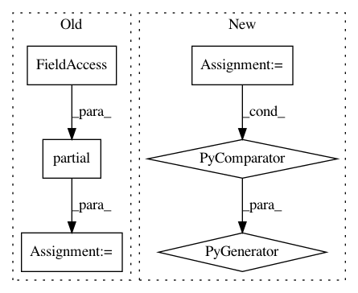

d8b7d488e4a96e6ec3915f9c36159518b6d2d930,python/baseline/mime_type.py,,,#,20
Before Change
return False
check_gzip = partial(check_mn, mn=MN.GZIP)
check_tar = partial(check_mn, mn=MN.TAR, start=MN.TAR_START)
check_zip = partial(check_mn, mn=MN.ZIP)
class RE(object):
HTML = re.compile(b"(<!doctype html>|<html.*?>)")
After Change
int2byte = (lambda x: bytes((x,))) if PY3 else chr
_text_characters = (
b"".join(int2byte(i) for i in range(32, 127)) +
b"\n\r\t\f\b")
// Borrowed from: https://eli.thegreenplace.net/2011/10/19/perls-guess-if-file-is-text-or-binary-implemented-in-python
In pattern: SUPERPATTERN
Frequency: 3
Non-data size: 6
Instances
Project Name: dpressel/mead-baseline
Commit Name: d8b7d488e4a96e6ec3915f9c36159518b6d2d930
Time: 2019-02-06
Author: dpressel@gmail.com
File Name: python/baseline/mime_type.py
Class Name:
Method Name:
Project Name: EpistasisLab/tpot
Commit Name: f39a564d9ff2fb19d7ffe2366729f9b877cb37f3
Time: 2017-02-14
Author: weixuanf@mail.med.upenn.edu
File Name: tpot/base.py
Class Name: TPOTBase
Method Name: _evaluate_individuals
Project Name: aertslab/pySCENIC
Commit Name: 5b824f9124e8690ce35118cb2ab8ecfe61fad8cc
Time: 2018-02-06
Author: vandesande.bram@gmail.com
File Name: src/pyscenic/regulome.py
Class Name:
Method Name: derive_regulomes